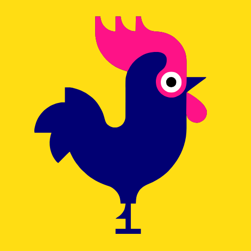
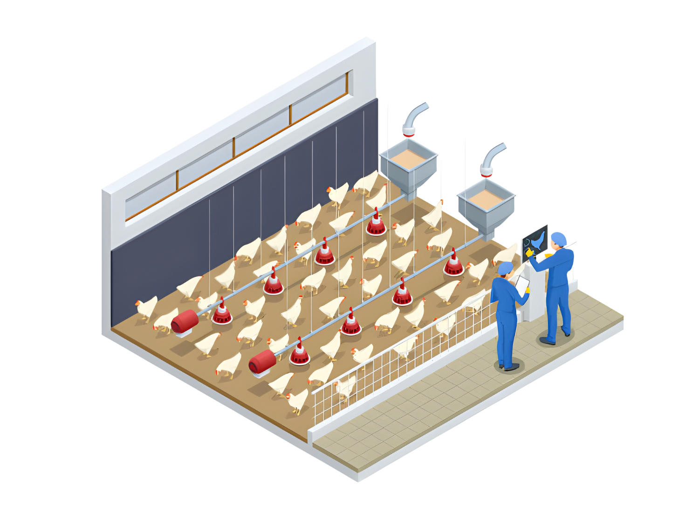
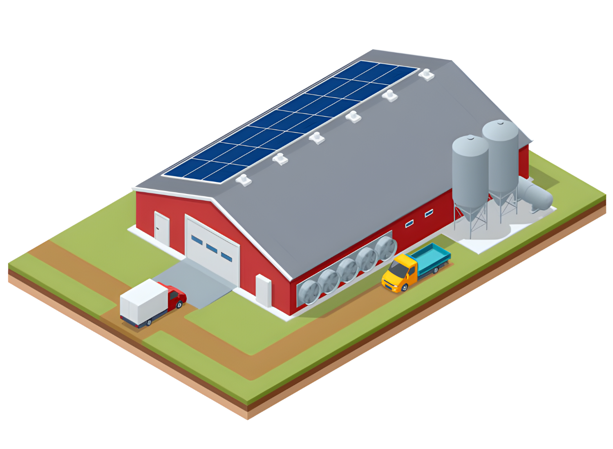
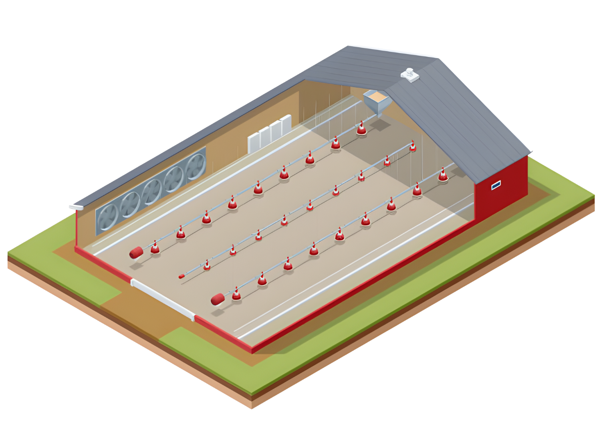
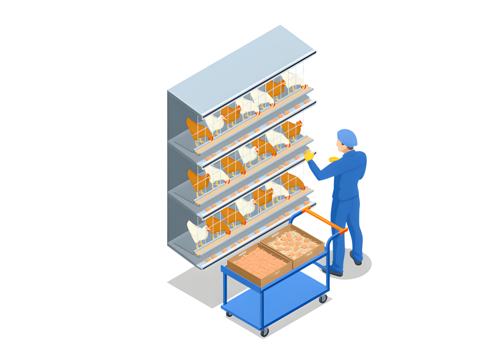
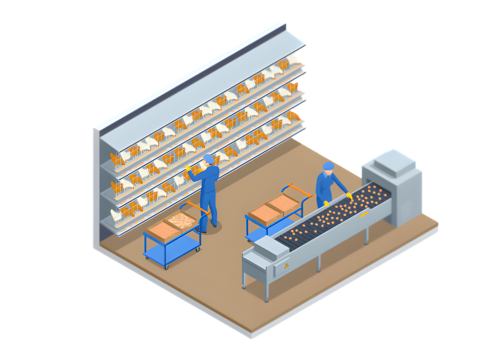
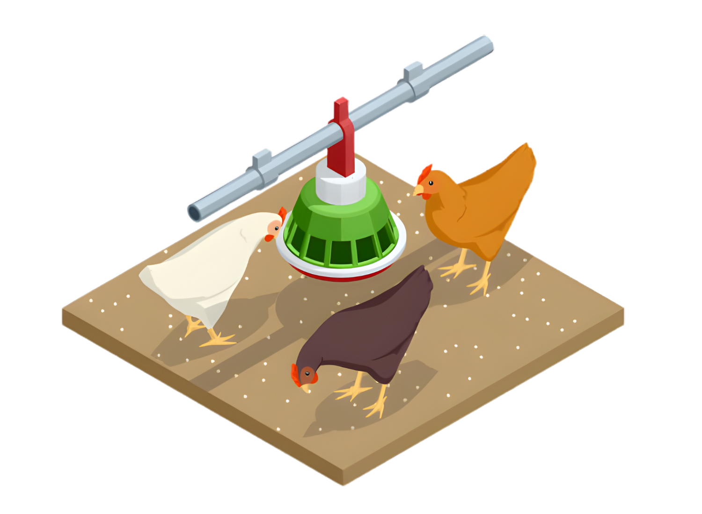

Hook
Promesa economica clara: reducir perdidas y aumentar margen por lote.

SmartGranjaAves ProEmbudo de venta optimizado para conversion
SmartGranjaAves Pro convierte registros operativos en accion diaria: menos mortalidad, mejor conversion alimenticia y mas rentabilidad por lote.
Implementacion guiada y activacion rapida con acompanamiento comercial.

Oferta de entrada
$9.99/mes
Plan Pro con activacion inmediata y onboarding.
Ventana de implementacion
47:59:59
Cierra hoy para iniciar esta semana
Promesa economica clara: reducir perdidas y aumentar margen por lote.
Mostrar costo real de seguir con hojas sueltas y decisiones tardias.
Explicar como la app transforma datos de campo en decisiones diarias.
Resultados, testimonio, indicadores y argumentos de confianza.
Plan, precio, bonus de onboarding y llamada a la accion simple.
FAQ de objeciones + CTA final a pago o llamada comercial.
Si hoy decides tarde, pierdes dinero. Si decides con datos, ganas. Este es el cambio que compran los productores cuando pagan SmartGranjaAves Pro.
Antes: cuaderno, Excel, atraso y perdida invisible.
Despues: panel en tiempo real, alertas y decisiones por prioridad.

Dejas de improvisar. Ves costos, conversion, ganancia y riesgos en una sola pantalla accionable.
Aunque falle la señal, tu equipo sigue registrando datos y la app sincroniza despues.
El asistente veterinario te sugiere acciones concretas para prevenir problemas antes de que escalen.
Multiusuario, roles y trazabilidad para crecer de una granja a varias sin perder el control.

Configuramos granja, galpones, lotes y responsables.

Tu equipo registra en campo y activa alertas en tiempo real.

El gerente decide con datos y mejora margen por lote.
Los clientes no pagan por funciones. Pagan por certeza de resultado y por menor riesgo de decision.
-18%
mortalidad con seguimiento operativo constante-12%
desperdicio de alimento por control de consumo+2.4x
rapidez en reportes para auditoria y socios24/7
asistencia con Vet IA y alertas contextualizadasElige el camino mas rapido para digitalizar y cobrar resultados.
Free
$0/mes
Mas vendido
Pro
$9.99/mes
Business
$24.99/mes
1. Click en activar.
2. Pago seguro en un solo paso.
3. Activacion por WhatsApp en minutos.

Si en tus primeros dias no ves claridad operativa, te acompanamos en implementacion guiada para que tu equipo quede funcionando.
La meta no es prometer resultados magicos: es reducir friccion para que el cliente llegue al pago con confianza.
La app funciona offline-first. Tu equipo puede seguir registrando y luego sincronizar cuando vuelva la conectividad.
Si. Puedes crear usuarios con distintos roles y permisos para que cada persona vea lo que le corresponde.
Haz click en "Elegir Pro ahora", completa el pago y te contactamos para activar en minutos.
Ningun embudo serio puede garantizar 100% de conversion. Lo correcto es optimizar cada etapa, medir y mejorar continuamente para aumentar la tasa de pago.
Cierre de embudo
Menos friccion, mas claridad y una ruta de pago directa para que el interesado se convierta en cliente activo.